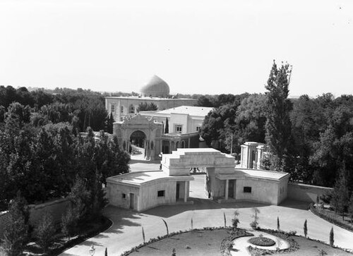
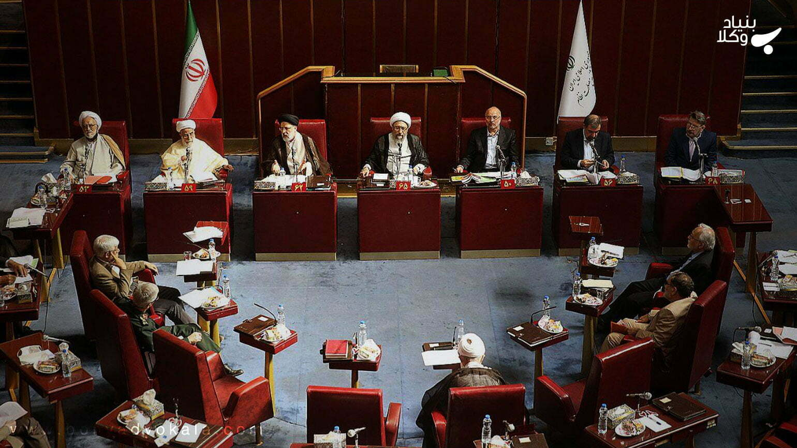
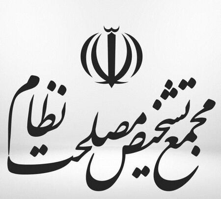

تاریخچه
در اوایل انقلاب اسلامی و در پی بروز اختلاف بین مجلس و شورای نگهبان برای تصویب مصوبات مجلس و لزوم تطابق آنها با شرع اسلام، ریاست وقت مجلس شورای اسلامی در پنجم مهر ۱۳۶۰ طی نامهای از سید روحالله خمینی درخواست کرد که راه حلی ارائه دهد. وی طی نامهای به مجلس اجازه داد تا موارد مصلحتی را با اکثریت اعضا نمایندگان و قید موقت به تصویب برسانند.اما با وقوع اختلافات بیشتر در این زمینه باقی بودن مشکلات سرانجام پس از مکاتباتی بین مقامات عالیرتبه و ذیربط وقت کشور، درخواستی در بهمن ماه ۱۳۶۲ به امضاء رئیسجمهور وقت، رئیس وقت مجلس شورای اسلامی، رئیس وقت دیوان عالی کشور، نخستوزیر وقت و سید احمد خمینی به سید روحالله خمینی برای چارهجویی در این باره ارسال گردید. سید روحالله خمینی در تاریخ ۱۷ بهمن ۱۳۶۶ هجری خورشیدی با صدور فرمانی، مجمع تشخیص مصلحت نظام را برای رسیدگی به این قبیل امور تأسیس نمود. این مجمع که در آغاز تأسیس، صرفاً بهمنظور تشخیص مصلحت در موارد اختلاف بین مجلس و شورای نگهبان تأسیس گردیدهبود، وقتی قانون اساسی جمهوری اسلامی ایران در سال ۱۳۶۸ مورد بازنگری قرار گرفت پس از بحثهای مشروح دربارهٔ جایگاه مجمع تشخیص مصلحت، وظایف یازدهگانهای مستند به اصول ۱۱۲، ۱۱۱، ۱۱۰ و ۱۷۷ برعهدهاش قرار گرفت، تا به عنوان حلقه تکمیلی در حاکمیت نظام جمهوری اسلامی و در شرایط مختلف ایفای نقش نماید.

کاخ مرمر تهران، مقر پیشین مجمع تشخیص مصلحت نظام
۲. وظایف و مسئولیت ها
بر اساس قانون اساسی جمهوری اسلامی ایران، ۸ وظیفه برای این مجمع در نظر گرفته شده است. ۴ وظیفه عمومی و مستمر و ۴ وظیفه در موقعیتها و شرایط خاص و مقطعی.
چهار وظیفه ی عمومی:
1. تشخیص مصلحت میان نظرات مجلس و شورای نگهبان
2. تهیه و پیشنهاد پیشنویس سیاستهای کلی نظام (جمهوری اسلامی) در اجرای بند ۱ اصل ۱۱۰ قانون اساسی
3. حل معضلات نظام با ارجاع از سوی مقام رهبری
4. اعلام نظر در مورد استفساریههای مربوط به مجمع تشخیص مصلحت نظام
چهار وظیفه مقطعی:
1. مشاوره در اموری که رهبر ایران در اجرای اصل ۱۱۲ قانون اساسی به مجمع ارجاع میکند.
2. در صورت فوت یا استعفا مقام رهبری یا عزل توسط مجلس خبرگان رهبری، تشکیل یک شورای ۳ نفره جهت رسیدگی امور تحت اختیار رهبر.
3. تصویب مصوبات شورای رهبری ایران در صورت عزل، استعفا یا فوت رهبر وقت. (در زمان وجود رهبر، این بررسی بر عهده شخص وی است)
4. مشارکت در شورای بازنگری قانون اساسی جمهوری اسلامی ایران، بر اساس اصل ۱۷۷ قانون اساسی.
در خاطرات ۱ آذر ۱۳۷۷ هاشمی رفسنجانی، از ابلاغ مأموریت جدید توسط آقای خامنهای به مجمع تشخیص مصلحت نظام خبر داده است. هاشمی مینویسد: «شب میهمان رهبری بودم. دربارهٔ مسئلهای صحبت کردیم که اخیراً رهبری به مجمع تشخیص مصلحت نظام، درخصوص تشکیل شورای ویژهای برای تصمیمگیری در مورد مسایل فوق سرّی خارج از مقررات، به عنوان معضل، ارسال کردهاند و گفتند، خودشان آن را معضل نمیدانند و با اصرار آقای سید محمد خاتمی، رئیسجمهور، ارجاع دادهاند. قرار شد، پیگیری کنم.»

۳. نتیجهگیری
بنابراین ما در این تحقیق متوجه شدیم که مجمع تشخیص مصلحت نظام نقش مهمی در امور کشور دارد،ما اینجا در مورد مسئولیت های این مجمع و تاریخچه ی آن خواندیم
